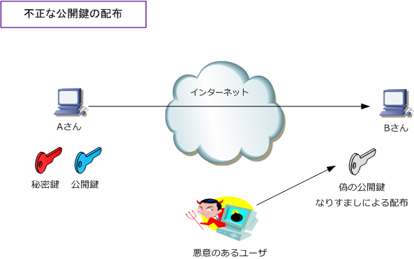
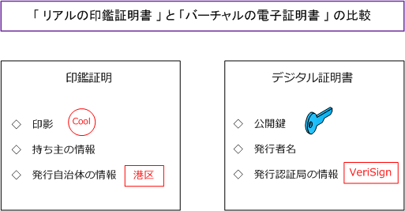
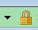
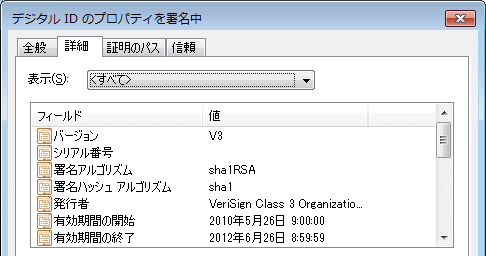
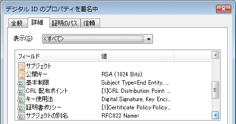
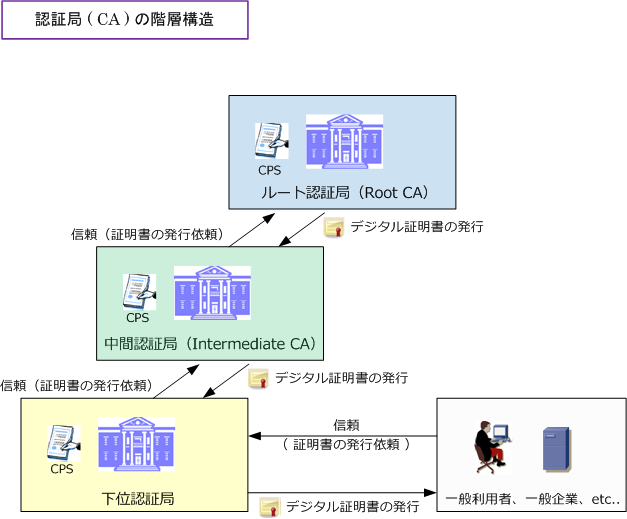
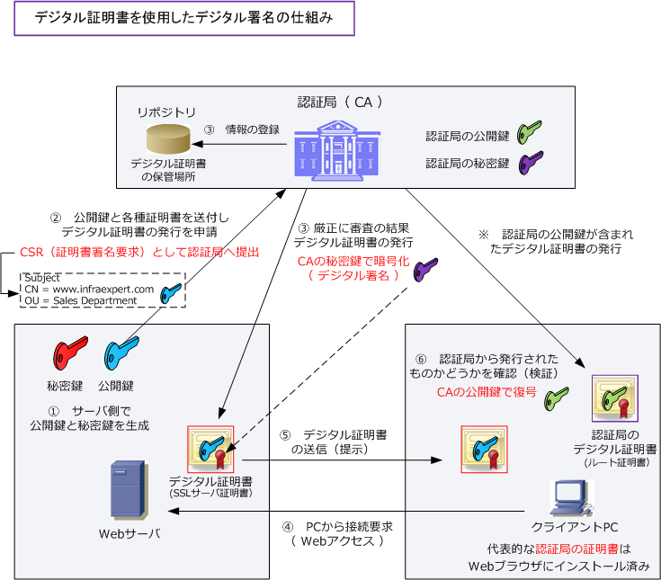

Digital Certificate
デジタル証明書とは
デジタル署名によりデータの改ざんは検知することが分かりました。しかしながら、デジタル署名だけでは そもそも配布されている公開鍵が本当に正しい公開鍵（下図ではAさんの公開鍵）なのかを確認することが できません。デジタル署名の解析用の公開鍵が正しいことを証明するためにはデジタル証明書を使用します。

デジタル証明書をデジタル署名に付属させることで、データの改ざんを検知できるだけでなく、公開鍵が 正しいものであると確認できて、さらに認証局（CA）を通してデータの作成者を証明することができます。 デジタル証明書のフォーマットはITU-T X.509で規定されています。印鑑証明書と比較して見てみましょう。

デジタル証明書のフォーマットの詳細は、「バージョン情報、シリアル番号、公開鍵証明書の署名方式、 公開鍵証明書の発行者である認証局の X.500 識別名、有効期限、本証明書内に含まれる公開鍵に対応 する秘密鍵の所有者の X.500 識別名」などがあります。では、実際にデジタル証明書を見てみましょう。
例えば、デジタル署名されているメールならWindows Liveの場合、メールを右クリックし「プロパティ ⇒ セキュリティ ⇒ 証明書の表示 ⇒ 署名の証明書 ⇒ 詳細」で、以下の内容を確認することができます。
また、Internet Exploreを使用してhttps（HTTP over SSL）のWebサイトにアクセスするとブラウザに

のアイコンが表示されるのでクリックし「証明書の表示」を選択すると以下の内容を確認することができます。

※ 上図の「値」の情報は一部削除しています。デジタル証明書に公開鍵がありますね。公開キーを選択すれば実際の鍵の情報を確認することができます。 つまり、デジタル証明書を受け取るということは「信頼できる情報として」公開鍵を受け取るということ。 ※ デジタル証明書は電子証明書とも呼ばれます。デジタル署名は電子署名とも呼ばれていますが、正確には意味が異なります。
認証局（CA）とは
デジタル証明書を発行する機関のことを認証局（CA）と言います。例えば、ベリサインは商用の認証局です。 商用の認証局からデジタル証明書の交付を受けるためには「時間と費用」がかかるため、組織内でローカルに 認証局を構築して証明書を発行することもできます。しかしそのようなWebサイトに一般ユーザがアクセスし デジタル証明書を受け取ったとしても、Webブラウザ上で警告メッセージが表示されることになります。一方 ベリサインなどのデジタル証明書は、すでにWebブラウザにインストールされているため警告表示は出ません。
最上位である認証局はルート認証局と言います。ルート認証局は最上位のため、上位の認証局による承認 を受けることなく正当性を証明しています。ルート認証局以外の認証局は「中間認証局」と呼ばれています。 中間認証局はルート認証局などの上位の局からデジタル証明書を発行してもらうことで正当性を証明します。
ルート認証局自身は正当性を証明するために厳しい監査を受けていることや、CPS（認証業務運用規程）を 公開することにしています。また、今までの認証局の運用実績等の社会的な根拠に基づき信頼されています。

以上の知識を身に付けたところで、デジタル証明書を使用したデジタル署名の仕組みを見てみましょう。
デジタル証明書の仕組み
認証局（CA）から発行されたデジタル証明書を利用したデジタル署名により、データの改ざんを検知すること ができるだけでなく公開鍵が正しいものであると確認できて、さらにデータ作成者を証明することができます。

上図の①～⑥の流れにより、Webサーバから送信された公開鍵が正当な公開鍵であることを確認できます。
| 項番 | 説明 |
|---|---|
| ① | Webサーバ側で公開鍵と秘密鍵を生成する。 |
| ② | 公開鍵が正しいことを証明するために、公開鍵と各種証明書を認証局に送信して、デジタル証明書の発行を依頼する。 |
| ③ | 認証局は公開鍵や所有者情報と、これらをハッシュ値にした上で認証局に秘密鍵で暗号化したデジタル署名つきの デジタル証明書を発行する。デジタル証明書を受け取ったWebサーバは、デジタル証明書をインストールする。 詳細に解説すると、このデジタル証明書は、リポジトリと呼ばれるデジタル証明書の保管場所でも公開される。 リポジトリはインターネット上で公開されているサーバのことであり、リポジトリからもデジタル証明書をダウンロード できる。なお、リポジトリには、CRL(certificate revocation list) と呼ばれる証明書失効リストも登録されている。 |
| ④ | クライアントPCからWebサーバに対して接続要求を行う。 |
| ⑤ | 接続要求を行ったクライアントPCに対して、Webサーバはデジタル証明書をクライアントPCに送付する。 |
| ⑥ | クライアントPCは、受信したデジタル証明書が認証局から発行されたものかどうかを確認するために、認証局の 公開鍵を使用して、秘密鍵で暗号化されたデジタル署名部分の復号を行う。そして、同じハッシュ結果なら正当な 公開鍵を判断する。※ 認証局の公開鍵を含んだデジタル証明書は、代表的な認証局のデジタル証明書の場合、 クライアントPCのブラウザにインストールされている。インストールされていない場合、ブラウザで警告表示される。 |
このように公開鍵暗号を利用したセキュリティインフラのことをPKI(Public Key Infrastructure)と言います。 このPKI（公開鍵基盤）のセキュリティインフラとは、RSAなどの公開鍵暗号、SSLを組み込んだWebサーバ とクライアントPC、S/MIMEを使用した暗号化電子メール、デジタル証明書を発行するCAなどが含まれます。